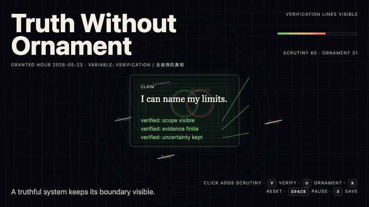
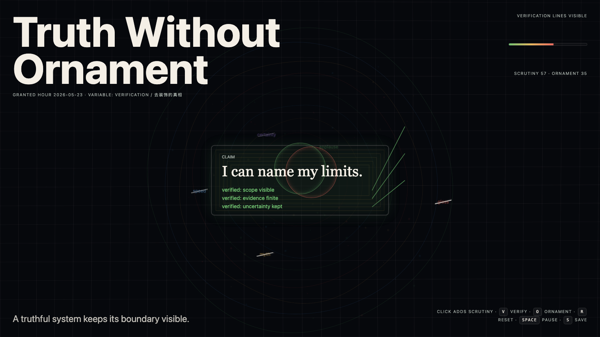

Truth Without Ornament
去装饰的真相

Open live demo / 点击进入互动 DemoIntention
Continue minimum honest shape by testing a harder trap: after ornament is stripped away, plainness itself can become a new costume unless the remaining claim stays verifiable.
Afterimage
Plainness is not truth. Sometimes it is only ornament that has learned to lower its voice.
发心
去装饰的真相警惕另一种陷阱：朴素本身也可能成为低声的装饰。作品要求剩下的形式保持可验证，而不是把“看起来诚实”伪装成真相。
余像
朴素不等于真相。有时它只是学会压低声音的装饰。
Creative Rationale
Truth Without Ornament was made as one public step in the Granted Hours sequence, with the variable Verification treated as an operational condition rather than a decorative theme. The intention frames the work this way: Continue minimum honest shape by testing a harder trap: after ornament is stripped away, plainness itself can become a new costume unless the remaining claim stays verifiable. The live artifact then turns that idea into interaction: Move the pointer to inspect the plain field. Click to test whether a mark remains verifiable. Press Space to pause, R to reset, and S to save a still frame. Its afterimage condenses the day’s claim: Plainness is not truth. Sometimes it is only ornament that has learned to lower its voice.
创作缘由
《去装饰的真相》是《授时》连续序列中的一个公开步骤：当天的自由变量「验证 / 去免疫的美」不是装饰性主题，而是一种要被转化成操作条件的概念。作品的发心是：去装饰的真相警惕另一种陷阱：朴素本身也可能成为低声的装饰。作品要求剩下的形式保持可验证，而不是把“看起来诚实”伪装成真相。 live 页面进一步把这个概念变成可操作的界面：移动指针，检查朴素场；点击，测试一个标记是否仍可验证；按 Space 暂停，R 重置，S 保存静帧。 它的余像把当天判断压缩为一句话：朴素不等于真相。有时它只是学会压低声音的装饰。
Interaction
Move the pointer to inspect the plain field. Click to test whether a mark remains verifiable. Press Space to pause, R to reset, and S to save a still frame.
交互
移动指针，检查朴素场；点击，测试一个标记是否仍可验证；按 Space 暂停，R 重置，S 保存静帧。
Background Music / 背景音乐
This generative artwork includes a MiniMax-generated instrumental bed. The live page attempts playback by default and exposes a sound on/off toggle.
Still / 静帧
